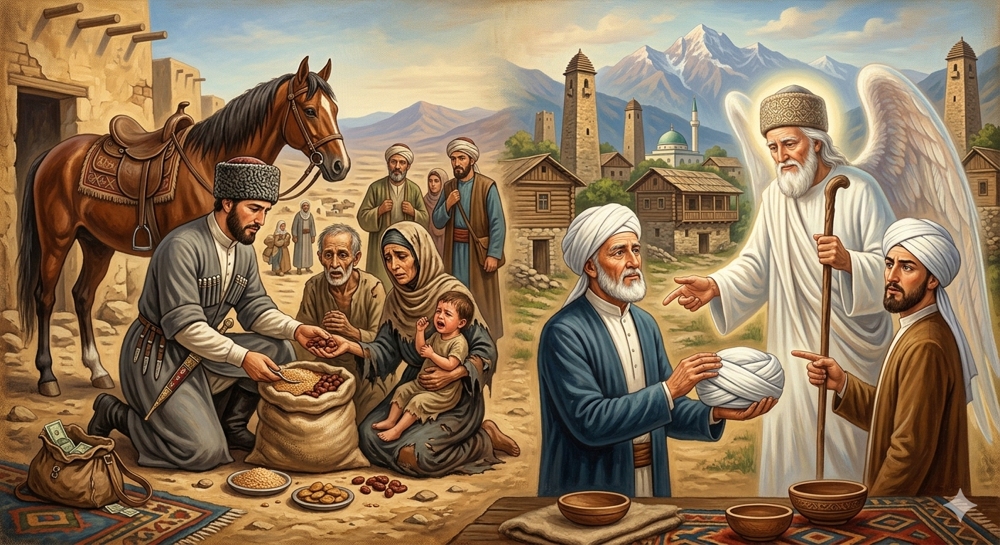

И.А. Дахкильгов. Хьехаме дувцарш - поучительные рассказы-притчи.
И.А. Дахкильгов. Хьехаме дувцарш - поучительные рассказы-притчи. Из ингушского фольклора.

Хьо ва бокъонца вола хьажо
Тхьовра, хьалха, хьажцӀа нах говраца е гӀаш а ухача хана вай ши саг хьажцӀа ваха хиннав. Шоай цӀенах дикка гаьн а баьнна, хьажцӀа дӀакхача массехка ди мара ца дисача хана, цхьан юртах чакхбаьнна дӀахо ваха везаш хиннав ер шиъ. Цу шера Ӏалаьмате йоккха йокъал а этта, нах моцалла леча кхаьча хиннаб. Вай из ши саг юртах водаш, моцалла бийста ухка нах байнаб царна. СагӀа дехаш хиннад бераш, истий. ХьажцӀа ухача наха шоашта наькъа ахча вӀашагӀатохаш хулар. Цу шиннех цхьанне аьннад: - Къа да укх наьха, воашка долча ахчах ераш кхаба беза вай. - Цох хӀама хургдац, - аьннад шоллагӀчо, - Ӏа яхар вай дой, хьажцӀа кхоачаргдац вай, юхадерза дезаргда. Барт бехаб цар. Цхьанне ше цӀаваххал мара шийна хӀама ца дуташ, юхе мел дисар моцаллах леча наха дӀадийкъар, тӀаккха цӀенгахьа вийрзар. ШоллагӀвар хьажцӀа а ваха, цӀавенав, чоалба а хьоарчая, Ӏохайнав. Уж шиъ цхьана волча хана лаьтта десса хиннад Джабраил-малейк, воккхача сага куц а тӀаийца. ТӀаккха малейка аьннад царга: - Моцалла нах леча хана сагӀийна хӀама ца луш, ийккха дӀавахар хьо, цудухьа хьажол дехад хьа, хьажцӀа хьо дӀакхачалехьа а. Чоалба Ӏояьккха, из лелае бокъо яц хьа, - аьннад цхьаннега, тӀаккха шоллагӀчунга аьннад, - хьажцӀа ваха араваьннача моцал бовш латтача нахах тӀехьваьнна дӀа ца водаш, уж нах моцалах боахаш хьо хиларах, хьо хьажцӀа кхаьчарех ва, бокъонца вола хьажо а ва хьо. Кертах чоалба хьоарчае мара езац хьа.
РУССКИЙ
Именно ты настоящий хаджи
Раньше, когда совершали паломничество (хадж) в Мекку на лошадях и пешком, двое наших отправились к этому святому месту. Далеко они ушли от родного дома. До Мекки им оставалось несколько дней пути, когда они проходили через некое тамошнее село. В это время была неслыханная засуха, и в том селе люди гибли от голода. Наши паломники видели опухших от голода людей, детей и женщин, просящих милостыню. Паломники обычно имеют с собою сбережения. Один из этих богомольников сказал: - Жаль гибнущих людей, надо нам на свои деньги купить им запас еды и тем самым спасти от голодной смерти. - Ничего не выйдет, - ответил второй, - если тебя послушаться, то нам придется прервать свой путь. Расстались паломники. Один из них, оставив себе денег ровно столько, чтобы добраться до дома, все остальное раздал голодным. Другой дошел до Мекки, затем вернулся домой и стал ходить в белой чалме, положенной сану хаджи. Когда эти двое уже встретились на родной земле, к ним подошел ангел Джабраил в облике старца: "Ты не дал подаяния людям, гибнущим от голода, а пошел мимо них в Мекку; хотя и дошел до нее, ты не приобрел сана хаджи и поэтому сними с себя чалму, - сказал он одному. Потом обратился к другому. - Хотя ты и вышел в путь, намереваясь дойти до Мекки, но ты его прервал, чтобы спасти людей от голода. Ты милосердный человек. Вот ты и есть истинный хаджи и удостаиваешься этого сана. Надень на себя чалму".
ENGLISH
You, of all people, are a true hajji
In the past, when people used to make the pilgrimage (Hajj) to Mecca on horseback and on foot, two of our people set off for this holy place. They had travelled far from their homes. They were still several days' journey from Mecca when they passed through a village in that region. At that time, there was an unprecedented drought, and the people in that village were dying of starvation. Our pilgrims saw people swollen with hunger, children and women begging for alms. Pilgrims usually carry savings with them. One of these pilgrims said: 'It's a pity to see people dying; we ought to use our own money to buy them some food and thus save them from starvation.' 'It won't work,' replied the second, 'if we listen to you, we'll have to interrupt our journey.' The pilgrims parted ways. One of them, keeping just enough money to get home, gave the rest to the hungry. The other reached Mecca, then returned home and began to wear a white turban, the mark of a hajji. When the two men met again on home soil, the angel Jibril approached them in the guise of an old man: 'You did not give alms to people perishing from hunger, but walked past them on your way to Mecca; although you reached it, you have not attained the status of a Hajj, and so take off your turban,' he said to one. Then he turned to the other. 'Although you set out intending to reach Mecca, you interrupted your journey to save people from starvation. You are a merciful man. You, then, are the true Hajji and are worthy of this title. Put on your turban.'
НОХЧИЙН
ПОГОВОРКИ
Боахамах ахча хулачох лорадолда вай. - Упаси нас, чтобы наше хозяйство обратилось в деньги.Гаъ шерадар аьнна хилац ды дика, корта боккха бар аьнна хилац саг хьаькъал долаш. - Конь хорошим бывает не потому, что у него круп широкий, а человек умным – не потому, что у него голова большая.Довхой дукха хургба хьа, наьха гӀалаташ Ӏа дувце. - Наживешь много врагов, если будешь распространяться о чужих недостатках.ЦӀийдаь аьшки, шийла хийи мо мара вӀаший товш дац. - Не уживаются раскаленное железо и вода.Ӏовкъарца а сапаца а цӀенларгбац Ӏаьржа гата чутеха кер. - Ни мыло, ни зола не отстирают черную прокладку плохого человека.ВоккхагӀчунца воккхагӀал леладе, зӀамагӀчунга зӀамагӀал леладайта. - Старшего чти сам, а младшего заставь чтить себя.Къуно сатувс беррига нах къоалага баларах. - Вор мечтает, чтобы все пристрастились к воровству.Сутарча сагаца гаргало ма лелаелахь, - шин кепигал мах боацача меттиге цо вохкаргва хьо. - Со скупцом не водись, потому что он продаст тебя за пару медных грошей.Хьаькъал долчунца дагавала, Ӏовдалча сагах гаьнавала. - С умным советуйся, дурака избегай.Укх дуне тӀа массанел яькхагӀа сага гийг я. - Самый жадный (ненасытный) на свете – это человеческий живот.